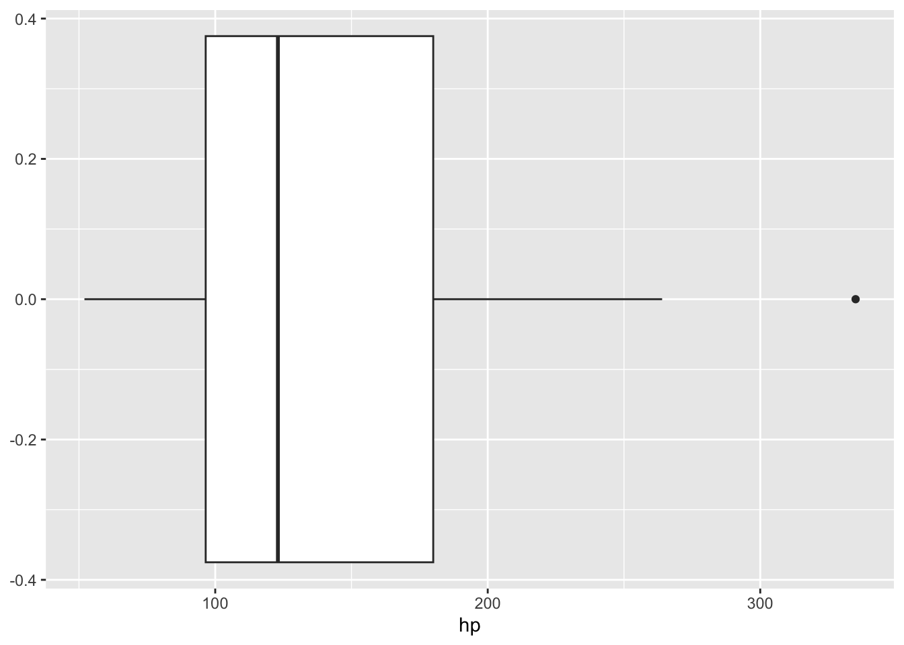

Exploratory Data Analysis (EDA) is the process of systematically examining your data to determine how best to visualize, summarize, and transform it in order to uncover patterns, trends, and insights. We use this process to:
Generate questions about your data.
Answer by visualizing, transforming, or modeling your data.
Use what you learn to refine your question or generate new questions.
For this process, we will be exploring the mtcars dataset. R has many built-in datasets and mtcars is one of them. You can bring up the documentation of the dataset by running ?mtcars. We can save it to our environment by running:
hide code
# save in our environmentmtcars <- mtcarsprint(head(mtcars))
Close mean and median values can show symmetry in your data.
A higher or lowermean from the median can show skewness.
Variation
Variation helps us determine the spread or how dispersed our data is. You can think of it as a way to determine “how consistent” your values are close to your “typical” or “centered” values.
Common functions include:
range()
var()
sd()
IQR()
It is beneficial to visualize your data distribution on top of computing these metrics above.
Tip
If your variable is continuous, use a histogram. If your variable is categorical, use a bar chart.
Visualizing Variation
We want to count how many rows fall into each category of the variable cyl, which represents the number of cylinders. Even though cyl is stored as a numeric variable, it behaves more like a categorical variable because the values are discrete (e.g., 4, 6, 8 cylinders). So, for this example, we will be creating a bar chart:
Visualize the distribution of the cyl variable.
hide code
ggplot(data = mtcars, aes(x=as.factor(cyl)))+geom_bar(aes(fill=as.factor(cyl)))+labs(x="Number of Cylinders", fill ="Number of Cylinders")
The barchart above shows us which category has the least amount of rows or the most number of rows. With this visualization, we can see easily that more cars in our data set have 8 cylinders (which was observed when finding the mode of this variable).
Visualize the distribution of the mpg variable
Because mpg is continuous, we will utilize a histogram.
cut_width() separates your data into groups of your specified width.
Outliers
Outliers can significantly impact model fitting and statistical calculations. They are data points that lie far away from the rest of your observed values. Some measures and models are highly sensitive to these extreme data points so it is always import to conduct exploratory analysis to understand your data (and know the context of your data!).
Outliers are data points that do not seem to fit the pattern.
Some of these data points can be data entry errors.
Some can be real observations that suggest new information.
Visualizing Outliers
A boxplot might be one of the easiest ways to visualize outliers within your data set. Additionally, a boxplot provides information about the median, quartiles, and spread of your data. But, outliers are shown as individual dots outside of the whiskers and box.
Find outliers by graphing a boxplot of the hp variable.
hide code
ggplot(data=mtcars, aes(x=hp))+geom_boxplot()

Our above plot shows that most data is centered around the median and is not as wide spread, but it does show one outlier that has a horsepower greater than 300. This plot also shows that most cars in this data set have around 100 - 180 horsepower.
This one data point can strongly influence the mean, but not so much of the median.
hide code
# mean with the 300 hpmean(mtcars$hp)
[1] 146.6875
hide code
# mean without 300 hpmean(mtcars$hp[mtcars$hp <300])
[1] 140.6129
It’s also useful to examine outliers within groups. For example, if we extend our boxplot by splitting it according to the am variable (automatic vs. manual transmission), we can see that the results differ between groups.
The boxplot above compares horsepower (hp) between automatic (am = 0) and manual (am = 1) cars. We can differences in both the spread of the data and outliers. For automatic cars, the distribution of horsepower is wider, but no individual points fall beyond the whiskers. However, the manual group shows two cars with high horsepower, marked as outliers.
Important
Outlier detection can depend on how our data is grouped and your question of analysis!
Identifying outliers
We can identify outliers visually by using graphs like boxplots, histograms, etc. However, we can filter our data several ways using different methods:
Tukey’s IQR Rule
An outlier is determined if that value falls below \(Q1 - 1.5*IQR\) or above \(Q3 - 1.5*IQR\) .
mpg cyl disp hp drat wt qsec vs am gear carb Q1 Q3 IQR
Maserati Bora 15 8 301 335 3.54 3.57 14.6 0 1 5 8 96.5 180 83.5
lower_bound upper_bound outlier_iqr
Maserati Bora -28.75 305.25 1
Z-Score
Another way is by using z-scores, which measures how many standard deviations a value is away from the mean. This is useful when data is approximately normally distributed.
Below, we set the cutoff to be anything more than 2 SD from the mean.
mpg cyl disp hp drat wt qsec vs am gear carb Q1 Q3 IQR
Ford Pantera L 15.8 8 351 264 4.22 3.17 14.5 0 1 5 4 96.5 180 83.5
Maserati Bora 15.0 8 301 335 3.54 3.57 14.6 0 1 5 8 96.5 180 83.5
lower_bound upper_bound outlier_iqr zscore_hp outlier_zscore
Ford Pantera L -28.75 305.25 0 1.711021 0
Maserati Bora -28.75 305.25 1 2.746567 1
outlier_pct
Ford Pantera L 1
Maserati Bora 1
Handling Outliers
Understand the Cause:
Natural Variability: Legitimate data variation
Data Entry Errors: Mistakes in data collection or entry.
Instrument/Process Error: Issues with data collection methods.
Decide on an Approach:
Keep Them: If they reflect true variation.
Transform Data: Reduce their impact.
Cap/Floor Values: Limit extreme outliers.
Remove Them: If they’re errors or irrelevant—document decisions.
Use Robust Models: Opt for models less sensitive to outliers.
ALWAYS DOCUMENT!
Covariance and Correlation
Covariance expresses how two numeric variables change together, whether it be positive or negative. (Covariance is sensitive and influenced by the units and scales of our variables.)
a positive result indicates a positive linear relationship - as x increases, y increases
a negative result indicates a negative linear relationship - as x decreases, y decreases
Correlation helps interpret covariance further by assessing both the strength and direction. The Pearson’s correlation coefficient, \(\rho_{xy}\), is the most commonly used measure, where \[-1 \leq \rho_{xy} \leq 1\]
\(\rho_{xy} = -1\) indicates a near perfect negative linear relationship
\(\rho_{xy} = 1\) indicates a near perfect positive linear relationship
However, the relationship gets weaker the closer the coefficient is to 0.
Let’s investigate more into the mtcars dataset and see if there is a relationship between hp, the gross horsepower of a car, and qsec, the shortest time taken to travel a quarter-mile distance.
What is the relationship between hp and qsec?
First, we will visualize the relationship by plotting a scatterplot:
hide code
scatter <-ggplot(data = mtcars,aes(x = hp, y = qsec))+geom_point()print(scatter)
We can observe a negative relationship from the scatterplot, which means that cars that take a shorter amount of time to travel a quarter-mile tend to have more horsepower. (as x increases, y decreases).
When we compute the covariance and correlation for these two variables, we get:
hide code
cov(mtcars$hp, mtcars$qsec)
[1] -86.77008
hide code
cor(mtcars$hp, mtcars$qsec)
[1] -0.7082234
The negative value from our covariance determines a negative relationship. However, the strength of this relationship is dependent on the units of our variable in question, so this value -86 is not easily interpretable.
The correlation value of ~ -0.71 standardizes the covariance by proportioning it between -1 and 1. This negative 0.71 value says that there is a slightly strong negative correlation.
How does the above correlation change when we remove the outliers we identified in the hp (horsepower) variable?
hide code
# correlation when we remove outliers identified by Tukey's Rulecor(mtcars$hp[mtcars$outlier_iqr !=1], mtcars$qsec[mtcars$outlier_iqr !=1])
[1] -0.6638874
hide code
# correlation when we remove outliers > 95th percentilecor(mtcars$hp[mtcars$outlier_pct !=1], mtcars$qsec[mtcars$outlier_pct !=1])
[1] -0.6082645
We see that when we remove outliers the strength of the relationship is not as strong when we include cars that have higher horsepower.
Tip
When would be the best time to remove or keep all data points?
If the goal is to focus on cars that are more “typical” in terms of horsepower, then removing the outliers can make the analysis more representative of that group. But, if the goal is to understand all cars in the dataset, then it is best to leave those data points in.
Correlation within group
Let’s quickly look at another example of correlation using data from the iris data set. This data set contains measurements of sepal width/length and petal length/width of 50 different flowers from 3 different species of iris.
What is the correlation between petal length and petal width?
hide code
cor(iris$Petal.Length, iris$Petal.Width)
[1] 0.9628654
hide code
ggplot(data = iris, aes(x=Petal.Length, y = Petal.Width))+geom_point()
Our value of 0.96 suggests that petal length and petal width have a strong, positive association, ie we can expect a larger petal length if petal width is large as well. We can kinda see this pattern when we look at the scatter plot above.
BUT, how does the correlation change when we observe the relationship by species?
# A tibble: 3 × 2
Species correlation
<fct> <dbl>
1 setosa 0.332
2 versicolor 0.787
3 virginica 0.322
The correlation is not as strong for the setosa and the virginica species. At times, grouping makes a large difference. If we look at the overall correlation, we might assume that this relationship holds for all iris species, which as shown may not be the case.
In the above code, we provide the cor() function the whole mtcars data set when mtcars ONLY consists of numeric variables (note, we only selected the numeric columns - if there are other columns, such as character columns, this would error out). The output provides us with a numeric representation of our correlation matrix.
Visualizing correlation matrix using ggplot2
hide code
# set correlation matrix to a data frame firstcor_matrix <-as.data.frame(cor_matrix)# create a new column that is the row names of our inital matrixcor_matrix$var1 <-row.names(cor_matrix)head(cor_matrix, 3)
# pivot the data set from wide to longcor_matrix <-pivot_longer(cor_matrix, cols =colnames(mtcars), names_to ="var2")# set the order we want our variables to appearcor_matrix$var1 <-factor(cor_matrix$var1, levels =rev(colnames(mtcars)))cor_matrix$var2 <-factor(cor_matrix$var2, levels =colnames(mtcars))
After the above data manipulation, we can create a heatmap using ggplot to visualize our matrix.
hide code
heatmap <-ggplot(cor_matrix, aes(x = var1, y = var2, fill = value))+geom_tile()+scale_fill_gradient2(low ="darkblue", mid ="white", high ="red", midpoint =0, limits =c(-1, 1)) print(heatmap)
Visualizing using the corrplotpackage
A simpler way to visualize this correlation matrix is by using corrplot.
hide code
library(corrplot)
Warning: package 'corrplot' was built under R version 4.3.3
corrplot 0.94 loaded
hide code
cor_mat <-cor(mtcars)corrplot(cor_mat)
In the above code, we provide the function corrplot() with the numerically computed correlation matrix.
Choosing to use ggplot vs corrplot is your personal preference. ggplot may provide additional customization for complex cases.
Data Transformation
In some cases, we may need to transform our data. By transforming, I mean by taking the log or the square root to help patterns be easier to see and analyze or to scale the data.
Why should we transform?
reduce skewness (or make more normal?)
stablize the spread
linearize the non-linear
reduce the impact of outliers
To discuss data transformation in more detail, we will look at the diamonds data set which comes with ggplot2. This data set contains prices for over 50,000 round cut diamonds. You can read more about it when pulling up the documentation (?diamonds).
Let’s visualize the variable price to see how the different prices of each diamond in the data set ranges from.
hide code
hist(diamonds$price, col ="blue")
Our above scatter plot shows that our data is right-skewed, we have lots of diamonds that range from $0-$5000, and very few diamonds that are above the $15,000 price range.
Let’s look at the distribution if we take the log of the price variable.
hide code
hist(log(diamonds$price), col ="blue")
After we log transform the price variable, we see the the distribution looks more balanced and symmetric from before. We see that our extreme values of price are now compressed, which may indicate that those large values will be less influential.
Let’s dive more into the price of diamonds based on the carat size (the carat variable).
hide code
ggplot(diamonds, aes(x = carat, y = price)) +geom_point() +labs(title ="Carat vs Price (Raw)")
In the above scatter plot, we see
there are MANY data points which make it hard to fully understand the pattern or relationship between the two variables
the overall trend seems to be positive, when carat size increases, price seems to increase as well, but the plot is curving up.
small diamonds are clustered at the bottom, and for larger diamonds, there is larger variation/more spread.
note, there is an extreme value around ~5 with a price range > 15,000
hide code
ggplot(diamonds, aes(x =log(carat), y =log(price))) +geom_point() +labs(title ="Carat vs Price (Log)")
When we plot the relationship with their log values, we see a more linear relationship with reduced variation.
Impact on Models
When we look at correlation, we are measuring the linear association between two different variables.
hide code
cor(diamonds$carat, diamonds$price)
[1] 0.9215913
hide code
cor(log(diamonds$carat), log(diamonds$price))
[1] 0.9659137
Although it is not a big change in correlation, the value between the log variables is stronger, indicating that our diamonds with extreme prices have less of an effect on the correlation. As we see in the scatter plots above, the graph shows an almost-perfect linear relationship.
Tip
Transforming to log will help when the relationship is curved or skewed and most especially when the data is being driven by outliers.
When we perform a simple linear regression model:
hide code
summary(lm(price ~ carat), data = diamonds)
Model Formula: price ~ carat
R-squared: 0.849
Adj R-squared: 0.849
Residual Std Error: 1548.562
Estimate Std. Error t value Pr(>|t|)
(Intercept) -2256.361 13.05535 -172.8304 0
carat 7756.426 14.06658 551.4081 0
hide code
summary(lm(log(price) ~log(carat)), data = diamonds)
Model Formula: log(price) ~ log(carat)
R-squared: 0.933
Adj R-squared: 0.933
Residual Std Error: 0.263
Estimate Std. Error t value Pr(>|t|)
(Intercept) 8.448661 0.001364691 6190.8959 0
log(carat) 1.675817 0.001933806 866.5901 0
When we model price ~ carat without the transformation, the slope tells us that for every extra carat, the diamond’s price increases by about $7,756. The model explains about 85% (shown by the R^2 value) of the variation in price, but it has large residuals. The model predictions are off by about $1,500 on average.
Our model when we do transform the data, the log-log model (log(price) ~ log(carat)), fits the data much better. The slope means that a 1% increase in carat size is associated with about a 1.68% increase in price. The model fit is stronger (R² = 0.933 vs 0.849) and the residuals are smaller. Instead of predictions being off by about $1,500, the log model’s residual standard error is only 0.263 (in log units). When we back-transform that, it means the model’s predictions are usually within about give or take 26% of the actual price.